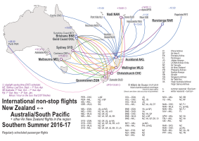
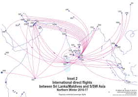
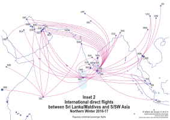

Hilário de Sousa
(While this page is already public, this page is not yet ready. It will probably be hosted somewhere else when this page is 'ready'. If you have reached here, welcome anyway!)
Network maps
As a linguist, I am interested in discovering patterns in languages, and describing them in accessable ways. In my free time, I am also interested in understanding patterns of other things that I see in my world, and ways of displaying them.
While there are more efficient ways of searching and displaying tempo-spatial information digitally nowadays, I am still fond of the traditional topological maps, transit maps for instance. The following are some maps that I have drawn to help me understand the information and patterns displayed in them. As you can see in the quality of this webpage, the maps are also amateurish. (If I have time, I'll try to improve my webpage and diagram making abilities.) I hope that you find them useful! Press the following thumbnails for more information.
New Zealand passenger flight route maps



Inner Oceania international passenger flight route map

Indian Ocean international passenger flight route map


 


Macau bus network map
Watch this space.